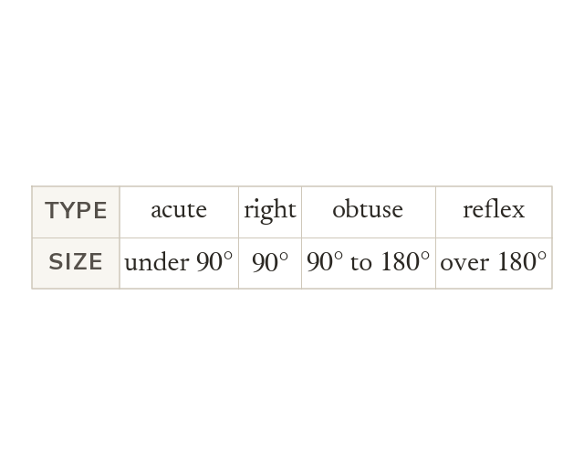

Angles measure turn
An angle measures turn, and a full turn is Its type depends only on its size.
An angle measures turn, and a full turn is Its type depends only on its size. A right angle is exactly A reflex angle is measured round the outside of the corner, so it is minus the angle inside.